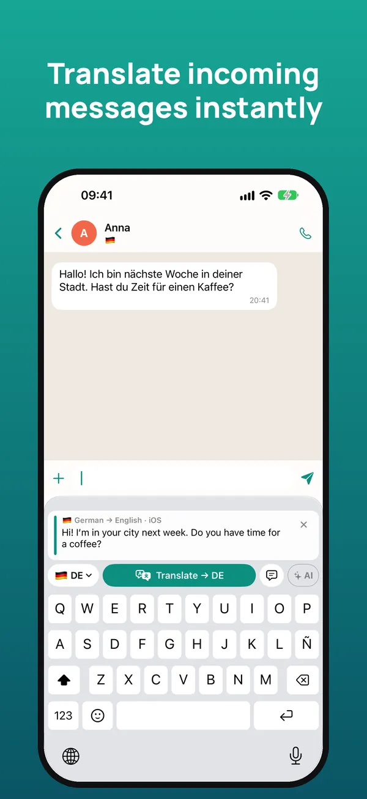
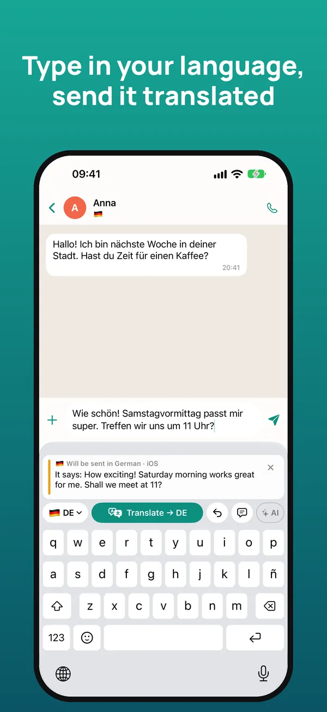
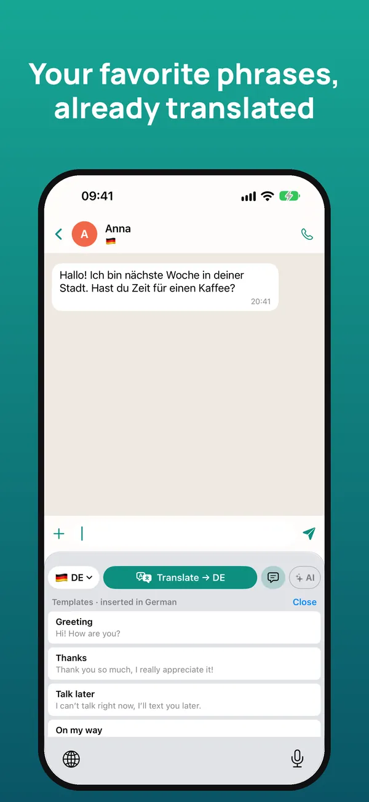
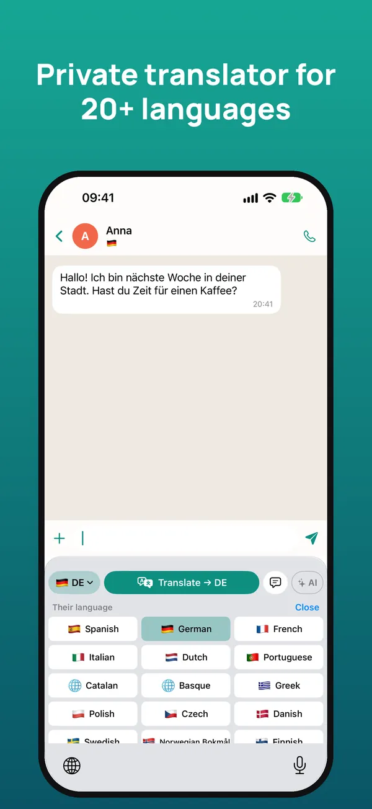

The translator keyboard to chat in any language
Read what people write to you in your own language and reply in theirs, right inside WhatsApp, Telegram, Instagram or any app. Translation happens on your iPhone.
Free 7-day trial · iPhone with iOS 26 or later

How it works
Touch and hold the message you received and tap “Copy”. The keyboard instantly translates it into your language.
Write your reply as usual and tap “Translate”: it’s replaced with the translation, ready to send.
Below, you see what your message says in your language, so you can send it with confidence.



Everything you need to talk to anyone
Understand the messages you receive and reply in the other person’s language.
WhatsApp, Telegram, Instagram, Messenger, email… It works wherever you can type.
Keeps the tone and the right level of formality, and uses the conversation for context.
Apple’s on-device translation: offline, no ads, no tracking and no accounts.
Connect your own Claude, Gemini or ChatGPT key for even more natural translations.
Templates inserted already translated and a glossary for your names and expressions, with iCloud.
20+ languages
English, Spanish, German, French, Italian, Portuguese, Dutch, Catalan, Basque, Greek, Polish, Czech, Danish, Swedish, Norwegian, Finnish, Romanian, Hungarian, Ukrainian, Russian, Turkish, Arabic, Chinese and Japanese.
Pricing
Typing with the keyboard is always free. Cancel anytime in your iPhone Settings. Prices may vary by country.
Frequently asked questions
Does it work with WhatsApp?
Yes. It works in any app where you type: WhatsApp, Telegram, Instagram, Messenger, Gmail, LinkedIn and more.
Is it free?
You get 7 days free. Then €2.99 per month or €19.99 per year, or €39.99 once. Typing with the keyboard is always free.
Why does it ask for “Allow Full Access”?
iOS requires it so the keyboard can read the message you copy, use AI if you turn it on and share settings with the app. It never stores or sends what you type.
Does it work offline?
Yes. With Apple translation, once the languages are downloaded, text is translated on your iPhone without a connection.
Which languages does it translate?
More than 20, including Spanish, German, French, Italian, Portuguese, Dutch, Chinese and Japanese.
Is there an Android version?
For now it’s available for iPhone with iOS 26 or later.
Get started in a minute
- Install the app and open the getting-started guide.
- In iOS Settings → Keyboards, turn on the keyboard and “Allow Full Access”.
- In any chat, hold 🌐 and choose the keyboard.
- Copy the received message to read it translated; write in your language and tap Translate.
Need help? Email us at soporte@sherpastime.com.